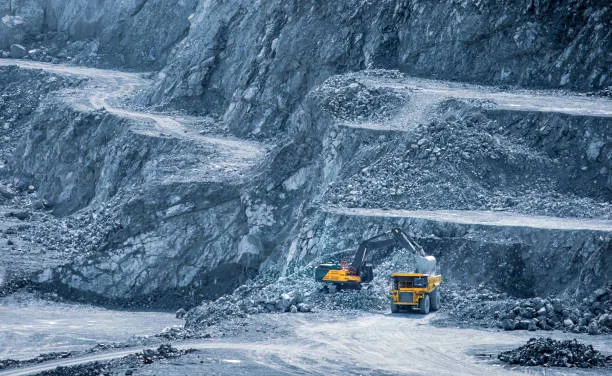

01
Diamond mining
Alluvial and kimberlite deposits are worked using different methods, each with its own planning, equipment and environmental considerations. Lulomine selects its approach according to the deposit and the applicable regulatory framework.